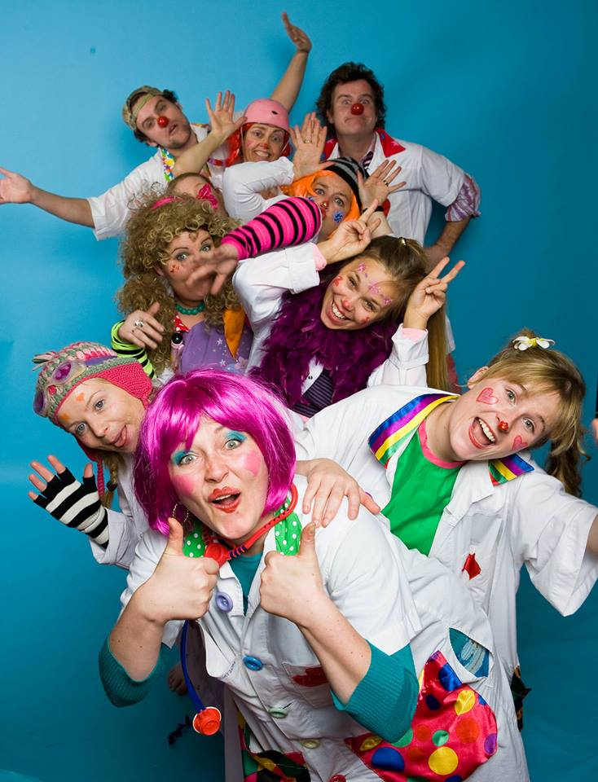
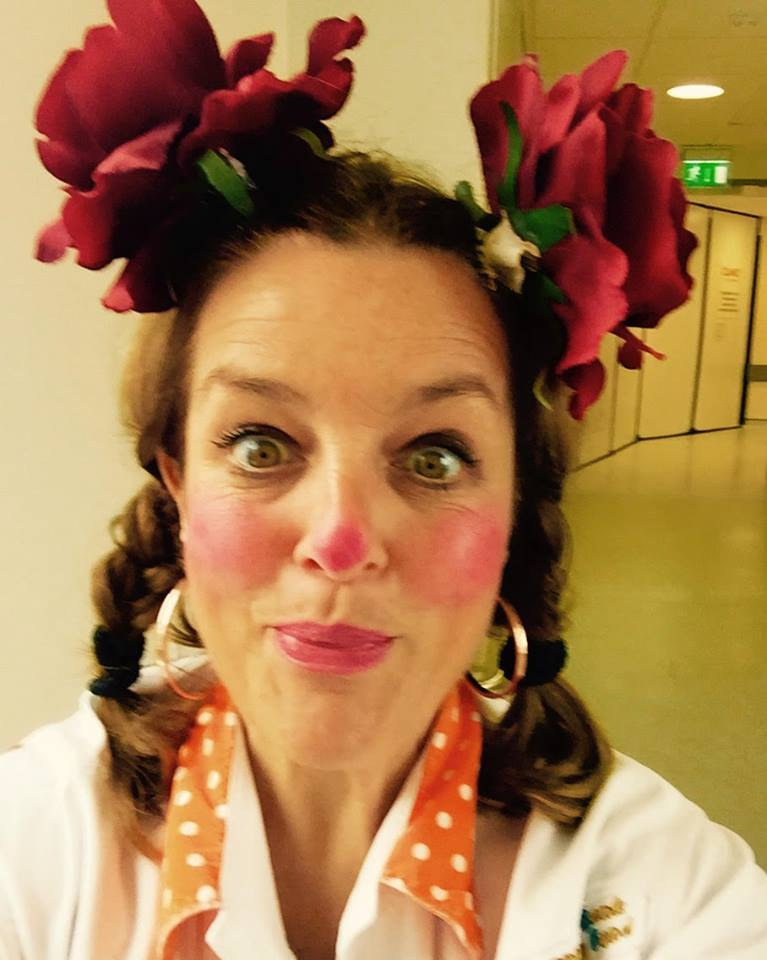
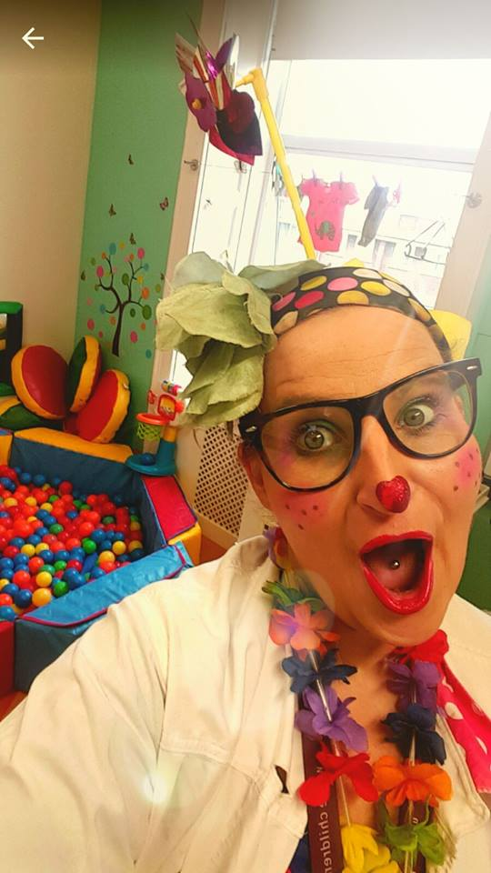
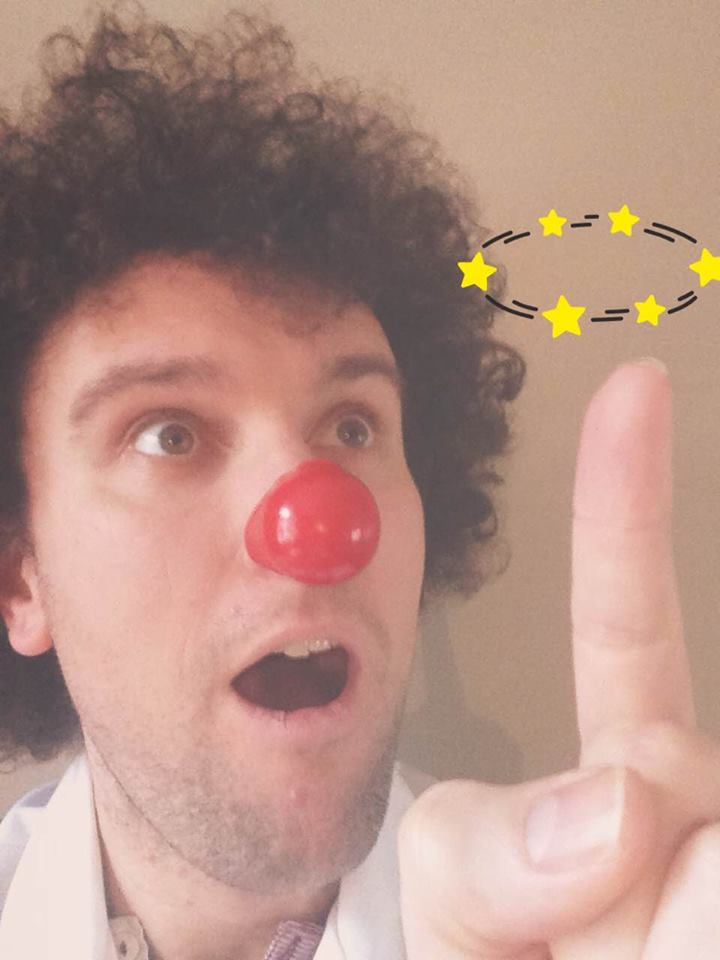
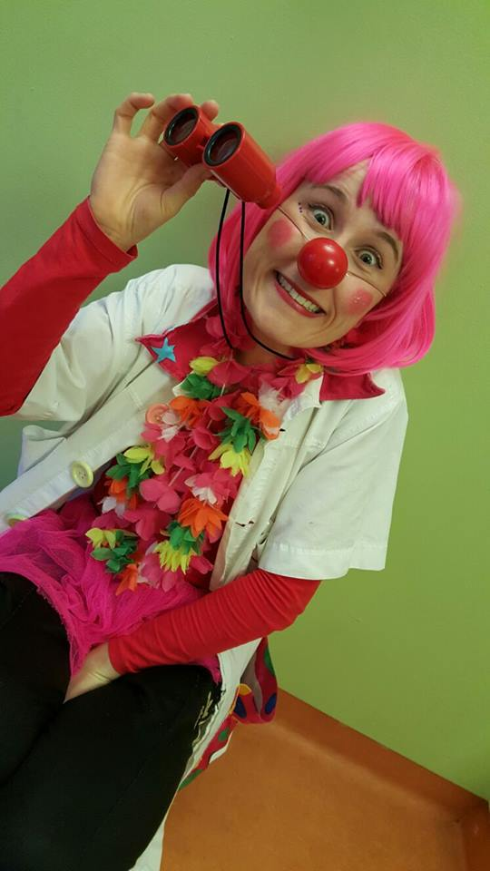
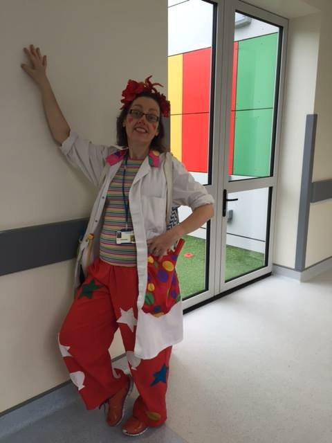
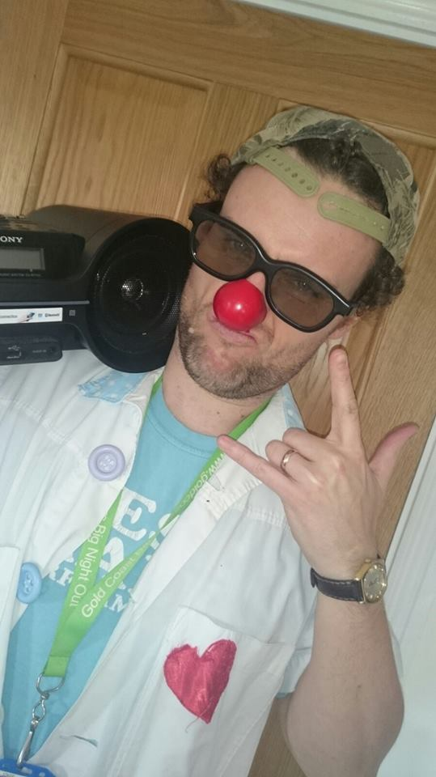
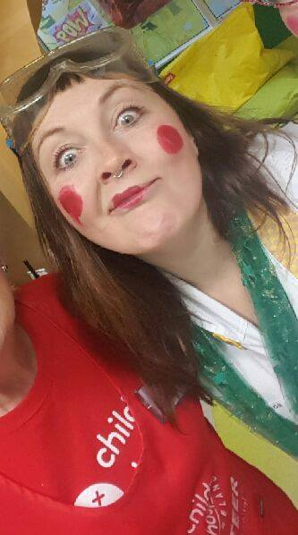

Meet the Clown Doctors
Dr. Ditzy Glitzy

Q: What is your favourite colour?
A: Yellow, as I love sun, mustard, bananas, daffodils and butter.
Q: Are you a dog or a cat person?
A: A dog person, only cause we never had cats in my house growing up. Dogs are very loyal and loving. I'm getting a new dog this year! One that doesn't shed hair and poop too much!!
Q: If you won the Lotto, what would you spend the money on?
A: I'd give loads to Aoife's Clown Doctors Ireland and other charities. I'd pay my family's mortgages and billls. I'd also travel to see my best friend in Sydney and bring him for dinner (maybe ice cream too!). I'd buy some red shoes, a new car and take time to write a play and a TV series.
Q: Where is your favourite place to go on holiday?
A: Italy, as I can speak Italian and love the food there. Ciao Bella Italia!
Q: What super-power would you like to have?
A: I'd love to be able to stop time. I'd never be late ever again and could sleep longer.
Dr. D. Licious

Q: What is your favourite colour?
A: Pink… no Purple… no anything that sparkles or with glitter… no baby blue.... Ah okay, I love the rainbow colour - that way I get them all
Q: What type of potato would you be?
A: Oh this is tricky. I love a good potato but I'm going to have to go with my mummy's mash....OMG it's yummy… full of milk and butter and it's a smooth as Brad Pitt. GET IN MY BELLY (it's 9am and now I want mash!)
Q: Are you a dog or a cat person?
A: I don't have either but I'm not great at remembering jokes …or much really! If you have met me you will know I'm great with the answers of jokes but just not with the question. ... so I'm a goldfish person.
Q: Where is your favourite place to go on holiday?
A: I love going to camp sites, not camping mind (Dr D. Licious is too cute for that kind of messing). I prefer to stay in mobile homes or caravans by the beach. I L♡VE the sound of the sea and building sandcastles and the funniest part is try to get rid of all the sand so it doesn't end up in your bed. Plus fish and chips with ice-cream rock when at the beach even if they’re extra crispy ‘cos the wind blows sand on them…. adds to the flavour and crunch if you ask me.
Q: What super-power would you like to have?
A: I would love to have the super powers that all the children in hospital have ‘cos they are fearless, strong, kind, caring, funny and complete fighters. I don't know how they do it… I'm sometimes scared of my own shadow, so I'd love some of their powers.💪
Crazy Face

Q: What type of potato would you be?
A: I would be a sweet potato.
Q: Where is your favourite place to go on holiday?
A: Somewhere that is close to the sea and near the mountains and in the city and surrounded by countryside.
Q: If you could be a farmer what would be on your farm?
A: It would be a chocolate farm. And I’d drive a chocolate tractor. Until we get a good summer. And then I’d watch it melt. Then, I’d stick a spoon in and eat it. Then I’d have a rest.
Q: What happens if Pinocchio says “My nose is going to grow now”?
A: Geppetto’s nose would get itchy.
Q: We know your Clown Doctor name, but what would your DJ name be?
A: DJ Whereistheplaybutton?
Dr Razzmatazz

Q: What is your favourite colour?
A: All the colours in the whole world!
Q: What would your best invention be?
A: Another one of ME, Dr. Razzmatazz.
Q: Are you a dog or a cat person?
A: I'm a fish person actually. I love watching them go round and round and they never get bored!
Q: If you won the Lotto, what would you spend the money on?
A: A constant supply of Barry's tea and chocolate digestives.
Q: We know your Clown Doctor name, but what would your DJ name be?
A: DJ RAZZ-AMAZING-IN-THE-HOUSE!
Dr Funnybones

Q: Are you a dog or a cat person?
A: Fish!! I love my fish because he is always blowing kisses to me through the glass and wagging his tail at me.
Q: We know your Clown Doctor name, but what would your DJ name be?
A: DJ Rattle Them Move it Move it Bones.
Q: What type of potato would you be?
A: A Wayne Rooney Mr Potato Head potato.
Q: Where is your favourite place to go on holiday?
A: To outer space cos I’d like to float around with no gravity.
Q: If you could be a farmer what would be on your farm?
A: Baby monkeys cos they’re always monkeying around.
And Spaghetti cos it’s fun to stick it up your nose.
Dr Coolio

Q: What is your favourite colour?
A: Yo yo yo, blue because anything cool is blue. Like the cold tap and the Irish Sea.
Q: What would your best invention be?
A: I’d invent something I could listen to my music on while walking. I’d call it a walkman.....what do you mean that’s already been invented. What? What’s an iPod?
Q: Are you a dog or a cat person?
A: I’m a dog person. It’s cool when a dog fetches things for you. I asked a dog to fetch me a stick once. He brought me back a brick. We laughed.
Q: If you won the Lotto, what would you spend the money on?
A: I’d buy a mega super duper sound system. So if ever I go to space I could still hear my music from Planet Earth.
Q: We know your Clown Doctor name, but what would your DJ name be?
A: DJ “Making your music dreams come true”. It’s long but I think it really gets across what I’m all about.
Q: What type of potato would you be?
A: I’d be my Mam’s mashed potato because everyone knows my Mam’s mashed potato is the best. Her secret ingredient is love, but also butter. Lots of butter.
Q: Where is your favourite place to go on holiday?
A: I don’t know if you can holiday here, but ‘In the Night Garden’ looks like a pretty relaxing place to go. I want to meet Iggle Piggle.
Q: If you could be a farmer what would be on your farm?
A: I’d have Old McDonald over to give him a break. He’s a very busy man on his farm and I’m sure he could teach me a thing or two.
Q: What happens if Pinocchio says “My nose is going to grow now”?
A: I know he’s been lying to me and he did eat my sandwiches. That is not cool Pinocchio.
Q: What super-power would you like to have?
A: I already have a super power. It’s the power to be the coolest Clown Doctor ever and I use my powers everyday!
Dr. Dizzy Lizzy

Q: If you won the Lotto, what would you spend the money on?
A: Clown Doctor Cruise ship.
Q: We know your Clown Doctor name, but what would your DJ name be?
A: Fizzy Dizzy In da housssee!!!! BoOm.
Q: What type of potato would you be?
A: Birds Eye potato Waffle.
Q: If you could be a farmer what would be on your farm?
A: Cherrys / Chocolate.
Q: What happens if Pinocchio says “My nose is going to grow now”?
A: He's tellin' porkys.
Q: What super-power would you like to have?
A: That I could make wishes come true for everyone.